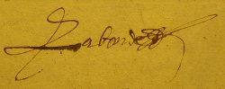
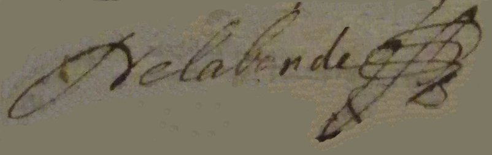
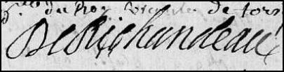
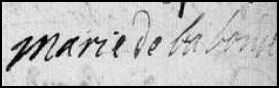
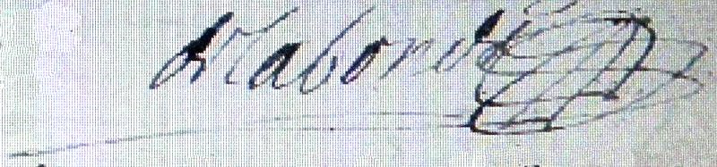
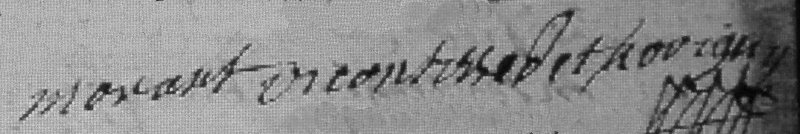
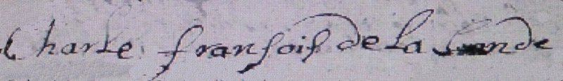
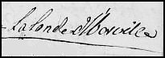

ESSAI de SYNTHESE sur
la famille de la BONDE d'IBERVILLE
ESSAI de SYNTHESE sur
la famille de la BONDE d'IBERVILLE
ESSAI de SYNTHESE sur
la famille de la BONDE d'IBERVILLE
ESSAI de SYNTHESE sur
la famille de la BONDE d'IBERVILLE
Premier degré
1.
Pierre de la Bonde 
1.1 Françoise de la Bonde, mariée le 7 janvier 1658 (réf) à Villiers-Fossard, avec Charles Gourdier, sieur de Hautmesnil, de Couvains, d'où enfants baptisés à la Meauffe (réf), probablement citée en 1652 (réf) et 1655 (réf) ;
1.2 Joachim de la Bonde, qui suit.
L'ancêtre le plus lointain que l'on connaît est Pierre de la Bonde, de Villiers-Fossard, dans la Manche. Il devait être fils d'un monnayer à Saint-Lô (réf). Il est cité en 1638 comme acheteur des Clot Guillot et Varollières (réf) tenus de la vavassorie de Launay. Launay est un hameau de Villiers-Fossard au nord-est du bourg, à la limite avec Saint-Clair-sur-Elle. A cette époque, les de la Bonde ne semblent pas être une famille implantée depuis bien longtemps à Villiers-Fossard . Même si les archives paroissiales sont lacunaires pour cette période, hors cette famille, ce patronyme n'y est pas représenté. On trouve ce patronyme dans des communes voisines, à la Meauffe (Nicolas de la Bonde, sieur de la Rivière, marié en 1649, d'où Denis, archer en la prévosté de Normandie), Hébécrevon (Louis de la Bonde, sergent à Saint-Lô, marié en 1655), et à la Barre-de-Semilly (Maître Guillaume de la Bonde, sieur de la Mare, décédé en 1655). Le milieu social de ces de la Bonde semble proche.
Pierre de la Bonde avait des terres à Moon-sur-Elle (réf). Il a pu s'implanter à Villiers-Fossard lors de son mariage avec Charlotte Bougeard. Bougeard est en effet un patronyme qu'on trouve continûment à Villiers-Fossard de 1545 (AD Manche, Abbaye de Savigny, série H, n°1493) à 1900. Il existe également un hameau Bougeard à l'est du bourg, non loin du Repas et de Bouligny. Des Bougeard avaient des terres près du Repas, à la limite entre Villiers-Fossard et Couvains (réf), ces terres étant proches de celles que Joachim de la Bonde obtiendra en 1661 contre échange de terres à Moon-sur-Elle.
Deuxième
degré

conseiller du roi en la vicomté de Torigni (réf)(réf)(réf)(réf) vicomte de Torigni (réf)(réf)(réf)(réf)(réf)(réf)(réf), décédé entre 1676 (réf) et 1689 (réf), marié vers 1651 (réf) à Marguerite Richandeau (fille de Jean et d'Anne Le Saulnier),
, décédée après 1700 (réf),(réf) parents de :
mariée en 1695 à Pierre Harasse, sieur de Boislandelles, d'où une fille mariée en 1723 (réf) à Paul Bernard Brohon, sieur du Bouillon.Troisième degré

, contrôleur du roi en la vicomté de Torigni (réf), conseiller du roi (réf)(réf)(réf), sieur de Soisy (réf)(réf), vicomte de Torigni (réf)(réf)(réf) né et ondoyé le 25 janvier 1652 à Villiers-Fossard (réf), baptisé le 1er janvier 1668 (réf), décédé le 16 octobre 1714 à Torigni-sur-Vire (réf), marié le 23 septembre 1700 à Langrune (Calvados) (réf) avec Anne Antoinette de Morant
(fille de Charles Thomas et de Valentine Chasot), décédée après 1722 (réf), vicomtesse de Torigni (réf), parents de :Quatrième degré
1.2.1.1 Charles François de la Bonde d'Iberville
, président à la cour des Comptes Aides et Finances de Normandie (réf), baron de Rupierre, baptisé le 5 septembre 1701 à Torigni-sur-Vire (réf)(réf), décédé le 30 janvier 1750 (réf)(réf), marié le 19 décembre 1724 à Rouen (réf) (Saint-Godard) avec Marie Catherine Le Cordier de Bigards de la Londe
(fille de François et Marie Voisin) (réf)), décédée après 1777 (réf), parents de :Cinquième et dernier degré
1.2.1.1.1 Anne Françoise de la Bonde d'Iberville née le 13
octobre
1726 (réf),
décédée le 20 octobre 1767
à
Biéville-en-Auge (réf),
au château de Rupierre, mariée le
25 mai 1752 (réf)(réf)(réf) dans
la chapelle du château de la Londe (réf) avec
Thomas Charles de Morant,
chevalier, comte de Penzès, baron de Fontenay,
seigneur de
Bréquigny (fils
de Charles et Gabrielle de la Rivière),
décédé le 18 octobre 1763
à Rennes (réf)
(Saint-Etienne) au château de Bréquigny,
parents de :
née le 13
octobre
1726 (réf),
décédée le 20 octobre 1767
à
Biéville-en-Auge (réf),
au château de Rupierre, mariée le
25 mai 1752 (réf)(réf)(réf) dans
la chapelle du château de la Londe (réf) avec
Thomas Charles de Morant,
chevalier, comte de Penzès, baron de Fontenay,
seigneur de
Bréquigny (fils
de Charles et Gabrielle de la Rivière),
décédé le 18 octobre 1763
à Rennes (réf)
(Saint-Etienne) au château de Bréquigny,
parents de :